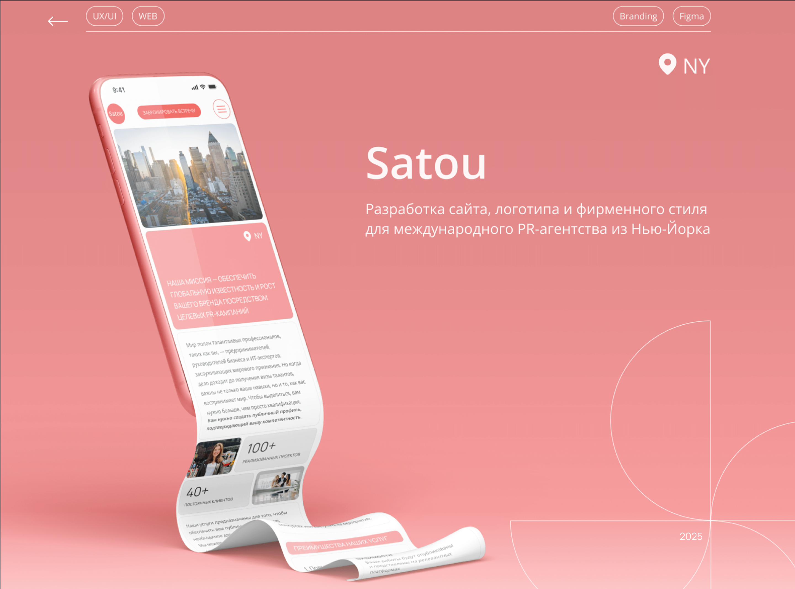
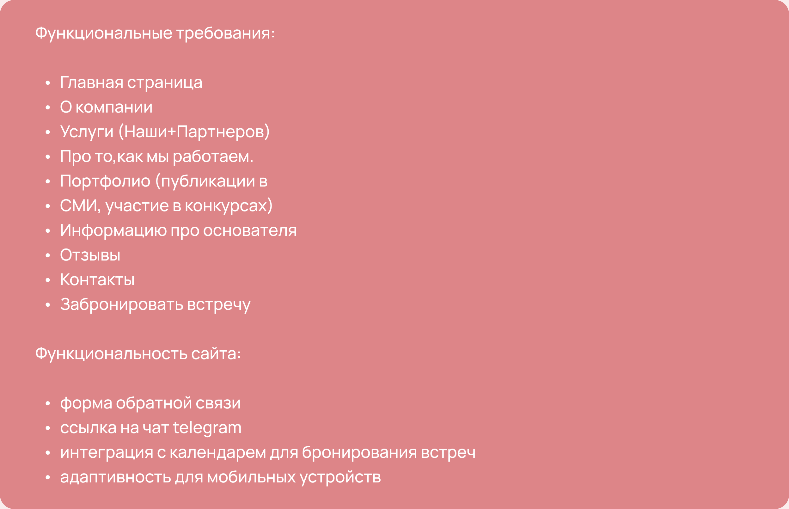
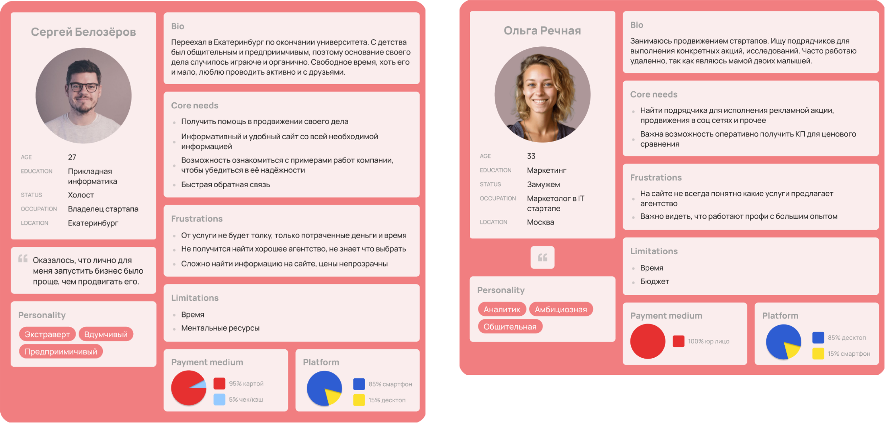
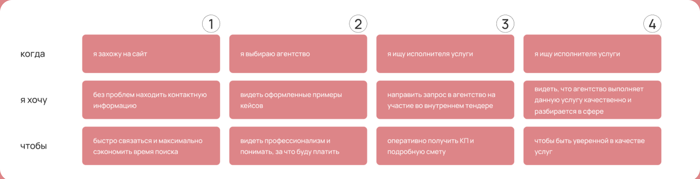
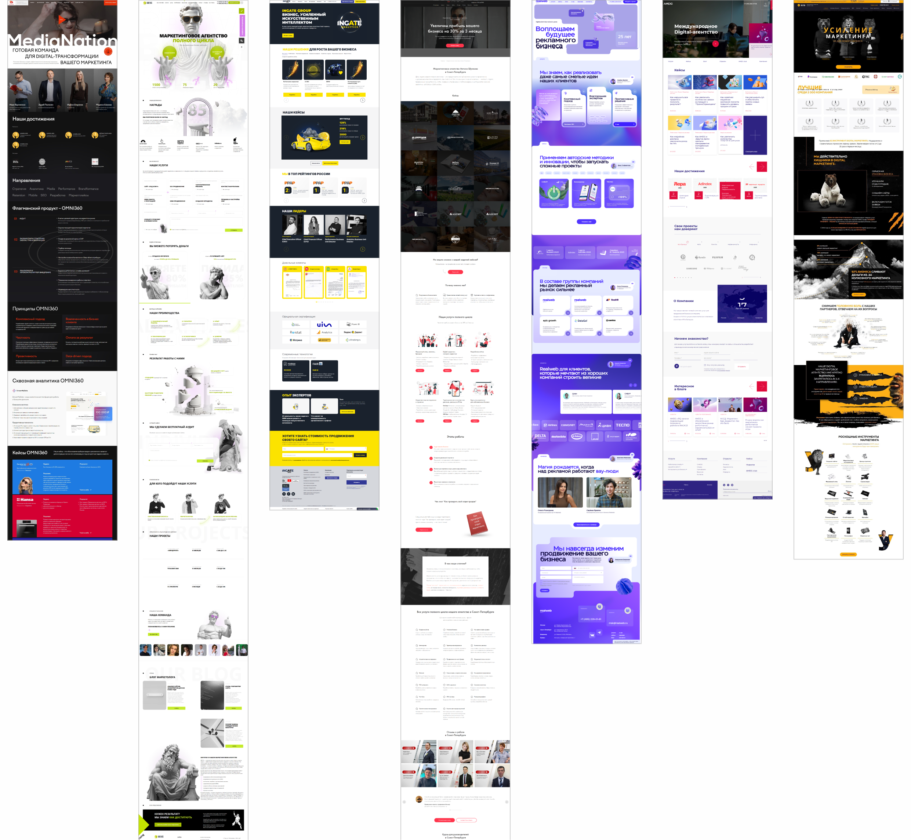
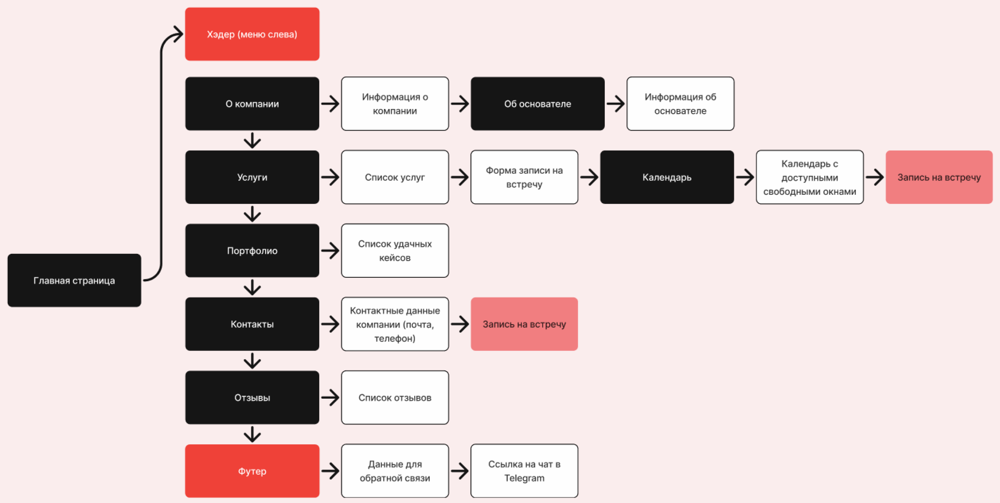

О заказчике
Satou — PR агентство, занимается продвижением технологических стартапов в сфере финансов, здравоохранения, образования со всего мира. Обладает экспертизой в сфере медиа различных регионов — США, Европы и СНГ.

Satou — PR агентство, занимается продвижением технологических стартапов в сфере финансов, здравоохранения, образования со всего мира. Обладает экспертизой в сфере медиа различных регионов — США, Европы и СНГ.
Разработка дизайна сайта в современном, минималистичном стиле. Разработка логотипа и фирменного стиля в японском стиле (Satou — с японского «сахар»). Разработка макетов адаптивов под разные устройства — ПК, планшеты, смартфоны.
Капитан команды на хакатоне: проводила фасилитацию, распределение задач и презентацию заказчику. Также создавала проект совместно с командой на всех этапах.
Проект прошёл полный UX-процесс: от требований и исследования аудитории до пользовательского сценария, анализа конкурентов и проектирования интерфейса.
На старте зафиксировали цели сайта, ключевые разделы и обязательную функциональность: портфолио, отзывы, запись на встречу, Telegram и адаптивность.

Сформировали две ключевые персоны — представителей целевой аудитории с разными задачами, мотивацией и барьерами.

Собрали задачи пользователей в формате Jobs To Be Done, чтобы связать реальные потребности с содержанием и функциями сайта.

Изучили структуру, визуальные решения и способы подачи услуг у конкурентов, чтобы определить сильные паттерны и точки дифференциации Satou. Отметили следующие положительные моменты: блоки хорошо разделены, есть ритм, много воздуха, нет нагромаждения анимации, удобная форма обратной связи.

На основе проведенных исследований пришли к следующим подходам в дизайне макета:
Выстроили сценарий движения пользователя по лендингу: от знакомства с агентством и услугами до портфолио, отзывов и бронирования встречи.

К сожалению, проект не был реализован фактически, в связи с изменением планов заказчика.